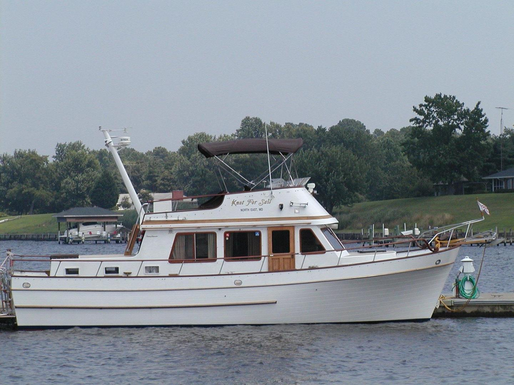

Marine Trader 40 Double Cabin Double Cabin
1974–1986
The Marine Trader 40 Double Cabin is a traditional aft-cabin flybridge cruiser with a teak two-cabin interior, accommodations for approximately six and twin-diesel shaft propulsion in typical examples. Port and starboard salon doors and an aft-cabin cockpit door support deck access, while the broad hull provides substantial living and storage space.

- Length
- 40 ft
- Beam
- 13.67 ft
- Draft
- 4 ft
- Hull behaviour
- Semi-Displacement
- Fuel
- Diesel
- Propulsion
- Shaft
- Engine configuration
- Twin Inboard
- Boat family
- Trawler
- Construction
- Fiberglass
Best for
- Couples or families wanting substantial traditional accommodations
- Extended inland and coastal cruising
- Buyers prepared for larger-boat maintenance
Trade-offs
- Large exterior teak burden and aging systems can require major refit
- Beam, height and displacement increase marina and haul-out costs
- Construction details vary among imported hulls
- Comfortable coastal size should not be confused with verified offshore capability
Known concerns
- No model-specific concern has been promoted to B-Atlas’s evidence threshold. This does not mean the model has no age-, condition- or hull-specific risks.
Inspection focus
- Moisture-test teak-deck fasteners, deck penetrations, window surrounds and cabin-house joints
- Inspect fuel tanks, fill and vent hoses, supports and access for corrosion or leakage
- Inspect original wiring, shore-power equipment, bonding and later electrical modifications
- Inspect exhaust systems, engine mounts, shafting, rudders and steering gear
- Confirm builder, model configuration and major refit history from hull documentation
Continue researching
Related boat models
38 ft · Displacement
38 ft · Semi-Displacement
43.5 ft · Semi-Displacement
36 ft · Semi-Displacement
40 ft · Semi-Displacement
40 ft · Planing / Modified-V
About this record
B-Atlas preserves uncertainty: missing information remains unknown rather than being treated as a negative. Specifications and guidance describe the model record; individual boats can differ by year, equipment, refit and condition.